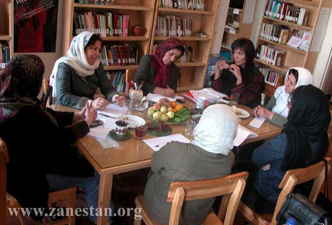
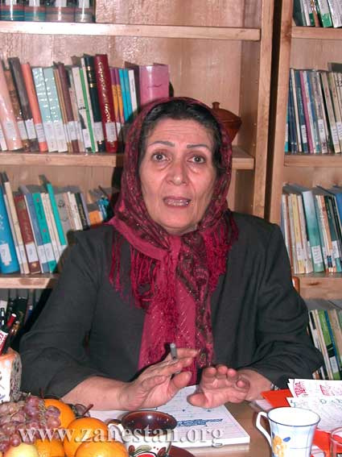
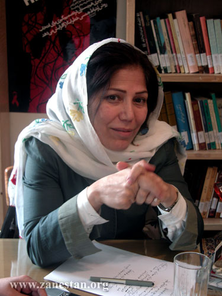
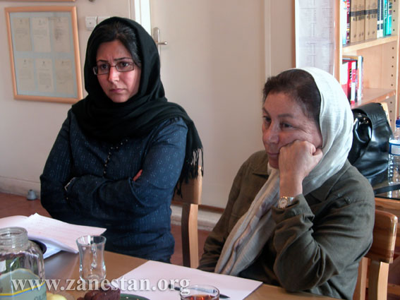
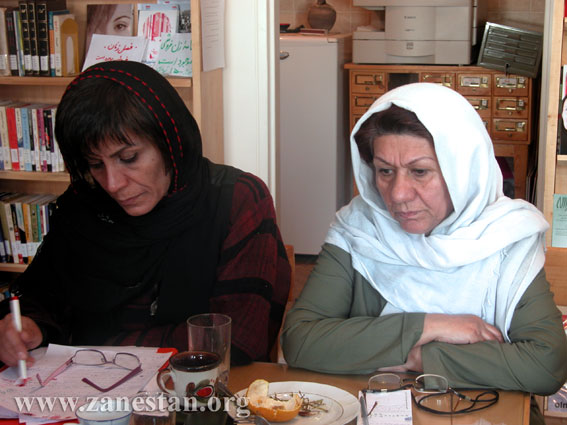

سایت زنستان: ویژه نامه پروین پایدار، بهانه ای شد تا هم نسلان پایدار، زنانی که در دوران انقلاب 57 سالهای جوانی را طی می کردند و اکنون در زمره فعالان حقوق زنان هستند، از آن دوران، چگونگی حساسیتشان به مسائل زنان وتجارب مشترکی که طی این سالها داشته اند، بگویند
«شهلا اعزازی»، استاد جامعه شناسی دانشگاه علامه؛ «اعظم خاتم»، پژوهشگر حوزه مسائل شهری و اقتصادی زنان؛ «فیروزه مهاجر»، فعال و مترجم حوزه زنان و ؛ «طلعت تقی نیا»، فعال حوزه زنان در زمينه مبارزه با خشونت و «منصوره شجاعی»، فعال حوزه زنان در زمينه راه اندازي كتابخانه هاي تخصصي زنان و کتابخانه های سیار در مناطق محروم، شرکت کنندگان در این میزگرد هستند، که پیرامون نحوه شکل گیری و حساسیت به مسئله زنان در دوره انقلاب، دلائل ماندن و فعالیت در ایران آن دوره، بازخیزش جنبش زنان پس از جنگ و چگونگی ارتباط فعالان زن در داخل و خارج از ایران به گفتگو نشسته اند. این میزگرد را «ناهید کشاورز»، دانشجوی دکترای جامعه شناسي، اداره کرده است.

ناهید کشاورز: در دوران انقلاب جو غالب بر تشکل های موجود؛ مبارزه با امپریالیسم و ایجاد جامعه بدون طبقه (توحیدی یا مارکسیستی) بود، آیا صدای مستقل زنان در آن زمان وجود داشت؟ شما در آن شرایط کجا بودید ؟ چه کار می کردید و چقدر مسائل زنان برای شما در آن دوران اولویت داشت یا نداشت و اصلا از چه زمانی مسئله زنان برایتان مهم شد ؟
شهلا اعزازی: من مدت کمی قبل از انقلاب به ایران آمدم و آشنایی ام با گروه های مختلف خیلی کم و اتفاقی بود، ارتباط سازمانی هم به آن شکل نداشتم. اطراف من هم افراد روشنفکر مستقلی بودند که پایگاه سازمانی نداشتند و برای همین نمی توانستم وارد گروه های خاصی شوم. و چون خارج از ایران درس خوانده بودم ارتباط گیری با اآدم هایی که می توانستم با آنها کار کنم خیلی دیر اتفاق افتاد. در آن زمان ما محو تظاهرات و انقلاب بودیم و فعالیت هایی که در خارج داشتیم،را اینجا ادامه می دادیم و در تظاهرات ها و و برنامه های مختلف بویم.

به تدریج که فعالیت ها از آن فرم نشست های گروهی بیرون آمد و کار به خیابان کشید و حرف ها مشخص شد، من برخی از حرف ها و پیام ها را اصلا نمی فهمیدم و مدام از خودم می پرسیدم که اینها چه می گویند و به چه درد می خورند ؟ و واقعیت این بود که شاید تضاد با امپریالیسم آنقدر بالا بود که من از همه طرف بمباران می شدم که تو حرف مردم را نمی فهمی، تو فاصله داری با مردم و .. از این حرف ها.
من البته آن موقع در هیچ کدام از گروه های زنان نبودم. اما چند تجمع 8 مارس و زنان را که رفتم، به نظر می آمد در این تجمع ها هم حرفی برای گفتن ندارند. در آن بحبوحه ای که آن همه فشار روی زنان بود، بسیاری از زنان در گروه های سیاسی بودند و در آن گروه ها هم همان حرف ها تکرار می شد.که سرفصلش این بود که زنان نیمی از جمعیت ایران را تشکیل می دهند و حق رای دارند و این جور حرف ها. آن چیزی که مسئله اصلی بود و مسائلی همچون حجاب از طرف وابستگان سیاسی یا اصلا مطرح نمی شد و یا اینکه آنها هم می گفتند بایدحجاب باشد . و صدای تک نفره امثال من به هیچ جا نمی رسید.
درباه اینکه این مسئله از چه زمانی برای من مطرح شد هم باید بگویم :مسئله زنان همیشه برای من مطرح بود و یا بهتر بگویم اصلا مطرح نبود.برای اینکه من در خانواده و محیطی بودم که در آن زمان فکر می کردم بین من و پسرها هیچ تفاوتی وجود ندارد. هر چند بعدها فهمیدم که در آن محیط هم تبعیض بوده است.اما در مجموع تبعیض خاصی حس نمی کردم.الان هم اگر بخواهم راجع به آن موقع فکر کنم باید خیلی موشکافانه قضاوت کنم تا تبعیض ها را ببنیم.
علاقمندی من به مسائل زنان در سطح کلان بود. من در 18 سالگی برای تحصیل به خارج رفتم و آنجا بود که به مسائل کلان مرتبط شدم. آنجا جنبش های دانشجویی، سیاسی و حتی زنان وجود داشت و گروه های مختلف ایرانی هم فعال بودند . همان جا بود که در ارتباط با گروه های مختلف ایرانی دیدم اصلا مسئله زنان برایشان مطرح نیست. شکل گیری نگرش های زنانه من اینگونه بود. در همان موقع بود که آنجا کتاب"منشاء خانواده انگلس" و "جنس دوم سیمون دوبوار" را با چند تا از دوستانم خواندیم و درباره اش بحث کردیم و یک فعالیت دیگرمان این بود که با زنانی که عضو گروه های مختلف بودند جلساتی می گذاشتیم و بحث زنان را در بین آنها مطرح می کردیم. این جذب من به مسئله زنان در انجا هم واکنشی درباره رفتار سیاسیون بود که توجهی به مسائل زنان نداشتند و تقسیم بندی هایشان در فعالیت ها بر اساس نگاهی کاملا زنانه و مردانه بود.
آنجا بود که من در سطح کلان متوجه مسائل زنان شدم. در کارآموزی هایم هم توجه ام به مسائل زنان بود و دکترای ام را هم با موضوع زنان نوشتم و این گرایش ادامه پیدا کرد.
اما چرایش را واقعا نمی توانم به طور مشخص بگویم. من همیشه فکر می کردم اگرچه خودم با تبعیض ها درگیر نیستم، اما وجود این تبعیض برای دیگران هم بد است.
اعظم خاتم:من می خواهم کمی از فرصت هم نسل بودن با پروین پایدار استفاده کنم و به یک تجربه متفاوتی اشاره کنم که یک گروهی که یک زمانی با هم همفکر بوده اند از دوران انقلاب داشته اند. من زمان انقلاب، ایران نبودم و وقتی که تابستان 58 برگشتم به موضوع زنان علاقمند شدم. در همان سال بود که یک تجربه کوتاهی با پروین در یک پروژه تحقیقاتی داشتیم. در آن سال ها یک رویکرد ایدئولوژیکی به کل جامعه مسلط بود که چون روایت هایش مکرر گفته شده من فقط به این نکته کوتاه اشاره می کنم که برای خیلی ها که به مسئله زنان به صورت اکتیویسیتی می پرداختند، مسئله زنان به صورت شناخت مطرح نبود. یعنی بسیاری از این ساز مان ها که در حوزه زنان فعال بودند در واقع در یک چارچوب سیاسی معینی قرار داشتند و معدود بودند کسانی که در این جمع ها مسئله زنان و تجزیه و تحلیل این مسئله را دنبال می کردند، پروین پایدار یکی از این معدود افراد بود و به نظر من یک استقلالی داشت نسبت به مجموعه ای که در فعالیت های اکتیویسیتی آن دوره شرکت می کردند.البته اکتیوست های آن دوره به دنبال شناخت کاربردی از وضعیت زنان بودند و سازمان های زنان در آن دوره همه شان گروه های تحقیق داشتند. اما آنقدر پرسش انقلاب و پرسش تغییر که در جامعه به صورت کلی پیش آمده بود بزرگ بود و پاسخی برایش داده نشده بود که طرح پرسش زنان در دل آن از یک عمقی بیشتر نمی توانست برود. یعنی افراد تقسیم می شدند به کسانی که معتقد بودند باید در مورد مسئله زنان مستقلا اظهار نظر کرد و کسانی که آن را تابعی از یک مسئله کلان تر می دیدند.
جالب است که امروز هم وقتی برخی روایت های تاریخی می خواهد آن دوره را تحلیل کنند جز به وجود این دو دسته اشاره دیگری نمی کنند. در حالی که در بطن آن دوره، کسانی بودند که کمی فراتر از اکتیویسمی که در دوره بعد انقلاب خیلی هم حاد بود، پرسش های تئوریک تری را مطرح می کردند. محصولاتی که ما در آن سال ها در حوزه زنان داریم یک مجموعه هایی هست با موضوع زنان در کشورهای جهان سوم و در حال توسعه که در جنگ با امپریالیسم و نظام های مستبد هستند. و دستاوردی که ما از نظر شناخت جهانی منتقل می کنیم مسائل کلاسیکی مثل ترجمه کولنتای است و یک تجارب مشخص مبارزات زنان در چارچوب مبارزات رهایی بخش. پرسشهای کلیدی وجود ندارد.اما کاری که پروین و امثال او انجام می دهند و در کتابهایش به آن می پردازد، پرسش درباره مدرنیته در ایران است. پرسش درباره اینکه زنان را در پروسه مدرن شدن جامعه ایران چطور نگاه کنیم. و این یک تحلیل تاریخی جامعه شناسی هست.

ما در آن سالها هنوز توان طرح این پرسش ها را نداشتیم. پرسشهای ما اساسا پرسش های سیاسی بودند و این مسیری اجتناب ناپذیر بود. اما نکته ای که برایم مهم است و قابل توجه است این است که در روند تولید یک شناختی راجع به جامعه ایران و مسئله زنان کسانی که از ایران رفتند و شروع کردند در فضای آاکادمیک آنجا کار و تحصیل کردن،.یک دید جامعه شناختی قدرتمندی را تولید کردند. من اعتقادم این است که ما نتوانستیم در ایران این قدرت تئوریک را داشته باشیم. کار تئوریک از این منظر که یک روایت تاریخی از تحولات دوره مشروطه به این طرف داشته باشیم. ما یک روایت سیاسی داریم یعنی روایتی که توضیح می دهد حضور زنان را در جنبش های اجتماعی این دوره اما حجم کاری که در آن سمت شده به طور طبیعی بیشتر است. گفتم به طور طبیعی چون اینجا فشارهای مختلف است.تصفیه است. اصلا مطالعات زنان خیلی دیر شروع می شود. دانشکده های علوم اجتماعی که بطن تولد چنین پدیده ای باید باشد آنقدر ضعیف شده اند و موضوع زنان از آن حذف شده که نمی توانست پایگاهی برای این مطالعات باشد. تحقیقات مستقل هم که اصلا چنین ظرفیتی نداشت.یک مقدار هم به خاطر سرکوبی که در تمام این سوالها با آن مواجه بوده ایم به نظر من به یک واگویه کردن مکرر تبعیض روآورده ایم. بی آنکه سعی کنیم آن را در ابعاد فرهنگی، جغرافیایی و تفاوتهای منطقه ای اش تئوریزه کنیم. یعنی یک مقدار پرسش های علوم اجتماعی و پرسشهای تئوریک درآن چیزیکه به آن جنبش زنان می گوییم مطرح نمی شود. یعنی اینقدر این نابرابری واضح است که باید مدام بر آن تاکید کنیم. به هر حال تحقیق نیاز به پرسش دارد و برای تحقیق های جدی باید پرسش های جدی مطرح شود وقتی یک موضوعی بیش از حد واضح و طبیعی باشد خاصیت تکرار سیاسی پیدا می کند و باید ان را مکرر در یک دعوای سیاسی اثباتش کنید. این به پرسش های عمیق تری که به هر حال نیاز مند تحقیقات تئوریک است مجال نمی دهد و این دستاوردی است که پروین درآان مشارکت دارد.
ما یک مشکل ثانوی هم داریم یکی اینکه در معرفی این کارها هم کم کوشیده ایم. گروه محققان مستقل یک زمانی شروع کرد این کار را با گذاشتن مجموعه سمینارهای درباره تحقیقات زنان در خارج از ایران دنبال کردن و اما ما حوصله کارهای تئوریک را کم داریم. کم می خواینم. کم بحث می کنیم. همین که کار پروین در ایران ترجمه و چاپ نشده این مسئله را نشان می دهد.نه تنها او بلکه در مورد افراد دیگر هم همینطور است.
من فکر می کنم این یک تاسف جدی است برای محققان زن در ایران که با توجه به محدودیت هایی که خودشان داشته اند برای انجام تحقیق و فقدان حمایت های جدی و گسترده این کارهای بیرون را هم به قدر کافی معرفی نکرده اند.
فیروزه مهاجر: من قبل از اینکه انقلابی باشم. فمنیست بودم. فکر می کنم فمنیست بودن زودتر از انقلابی بودن شروع شد برای اینکه اروپا بودم.منتها همانطوری که خانم خاتم گفتند دائما سوال داشتیم. دائما کار بود و تحول. که می توانستیم حضور داشته باشیم و شرکت کنیم بدون آنکه سرکوب شویم.

من قبل از انقلاب به ایران آمدم و آن موقع به چیزی به نام انقلاب اعتقاد نداشتم . حتی شناخت فمنیستی ام چیزی به نام انقلاب را زیاد تایید نمی کرد. در واقع فکر می کردم حقوق اقشار مختلف جامعه، زنان ومردان به تدریج و در اثر کار مستمر بوجود می آید. اما انقلاب یک جوری خودش را به کل جامعه تحمیل کرد.حتی به گروه هایی که می خواستند جدی تر کار کنند. گروه های زنانی که می خواستند کار جدی کنند نیز درگیر این ماجرا شدند که سوالهایی که انقلاب طرح کرده را جواب بدهند. هر چند در نهایت هم سوال خیلی خاصی مطرح نشده بود.
من پروین پایدار را درلندن و با یک فاصله ای از انقلاب شناختم و به نظر می آمد آن موقع روی این نسلی که این تجربه ها را پشت سر گذاشته باید کار کرد و اینکه چرا ما این تجربه های مشترک را نتوانستیم تبدیل به یک سوالهای مشترک کنیم. این مسئله بعد از یک زمانی در موقع تشکیل محفلهای زنانه نیز برایم مطرح شد و برای اولین بار متوجه شدم که هیچ چیز مشترکی با هیچ زن ایرانی ندارم.نه حتی با هم نسل های خودم که تجربه های مشترکی با هم داشته ایم.شاید هم این به خاطر شرایط انقلاب بوده که باعث می شود مدام از هم فاصله بگیریم. حتی وقتی که در ایران زندگی می کنیم و خیلی چیزهای مشترک داریم. مثلا در رابطه با حجاب واقعا ما نمی دانستیم که چکار باید بکنیم. به نظر من لباس پوشیدن مسئله ای است که به خود آدم ها مربوط است ولی اینکه کسی از بیرون می آید و می گوید این را بپوش یا نپوش ، دیگر آدم نمی داند که چکار باید بکند.یعنی نمی شود راجع به آن اظهار نظر کرد مگر آنکه یک کار تحقیقی درباره اش انجام داد. گروه هایی از زنان بودند که فکر می کردند آن جامعه آرمانی بی طبقه توحیدی را بیان می کند و سعی می کردند بفهمند چرا گروهی مثلا از حجاب استقبال می کنند. برای من البته حجاب خیلی مسئله مهمی نبود.دوره انقلاب هم خودم مجبور شدم مدتی در تظاهرات ها و برای حفاظت خودم حجاب داشتم و یک انتخاب فردی بود. اما زمانی که دوباره به فعالیت های زنان روی آوردم متوجه شدم که می شود این تجربه های فردی را تجربه های جمعی کرد.
طلعت تقی نیا: تجربه من خیلی متفاوت است. چون زمان انقلاب دو گروه از زنان فعال بودند. یک گروه از بچه های کنفدراسیون بودند که از خارج کشور آمده بودند و یک گروه هم افرادی مثل ما که اینجا زندگی و کار می کردند و اگر در خانه در یک محیط برابر زندگی می کردند و تبعیضی نمی دیدند. در بیرون از خانه تمام تبعیض ها را باتمام و جود حس می کردند. من در یک شرکت آمریکایی کار می کردم و در قسمت کارگری اش افراد روشن و آگاهی کار می کردند و خوب هم کار می کردند . در آنجا مسائل زنان برایم خیلی مطرح بود و مدام با تبعیض ها و برخوردهای جنسیتی دست به گریبان بودم. زمان انقلاب همانطور که دوستان گفتند همه مسائل حول محور ضد امپریالیسیم بودن می چر خید و همه گروه ها سیاسی بودند و در مورد زنان هم کلی گویی می کردند. اما تنها چیزی که واقعا در این بحث ها طرح نمی شد، مسئله زنان بود. یعنی به مرور وقتی با آنها جلو می آمدیم بیشتر متوجه می شدیم در مورد مسئله حجاب می گفتندکه این مسئله مردم نیست و نباید به آن بها بدهیم. در مورد آزاد های فردی هم همینطور و خلاصه همه چیز زیر سایه ضد امپریالیسیم بودن قرار داشت و وقتی سوال ها برایت مطرح میشد که این ضد امپریالیسم بودن چطور وکجا شکل می گیرد و مگر می شود این مبارزه بدون آزادی های فردی انجام شود. بدون اینکه حق آزادی بیان ، بدون اینکه آزادی مطبوعات داشته باشی ویا بدون شرایط دموکراتیک آیا می شود با امپریالیسم مبارزه کرد ؟ اما کسانی مانند من که در محیط های مردانه کار می کردند این تبعیض را در محیط کار به شدت احساس می کرد ند و آنجا بود که فهمیدم نه آن زنانی که خارج کشور بوده اند و نه آنهایی که در داخل مبارزه می کردند و آرزوهای بزرگ در سر داشتند کمتر مسئله زنان را مطرح می کردند و حس می کردند. شاید برای آنها مسئله ای که ما داشتیم مسئله ای حداقلی بود.

بنابراین من فکر می کردم باید حتما در سازمانی که مستقل باشد ومسئله زنان را طرح کند ، نقد کند و کار کند فعالیت کنم. آن جمع را هم پیدا کردم. اما وقتی که زمان بیشتر ِی گذشت فهمیدم آن هم به نوعی زیر نظر یک سازمانی با اهداف دیگر است و اگرچه فعالیتش خیلی ادامه نداشت. چون فشار زیاد بود. هم از بالا هم از طرف گروه های دیگر و کلا اوضاع برای زنان مستقل خیلی سخت بود و عمرش خیلی کوتاه بود. شایداگر مجالی برای فعالیت پیدا می کرد تبدیل میشد به سازمانی مستقل و کار آمد برای زنان.
منصوره شجاعی : من در واقع با یک فاصله ده ساله با این نسل مرتبط می شوم.مثل فیروزه این فرصت را نداشتم که دوران مدرن ایران دهه 40 را تجربه کنم و مثل شهلا اعزازی این اقبال را نداشتم که مدرنیته دهه 60 اروپا را تجربه کنم و بنابراین تجربه ملموسی از جامعه مدرن وحضور مستقل زنان در دوران انقلاب را نداشتم تنها خاطره و تجربه غیر مستقیم من مثلا عضویت مادرم در انجمن دوشیزگان و بانوان بود و اینکه من در اکثر جلسات همراهش می رفتم و از این دوران یک سری عکس و یک سری تصویر از خانم های شیک و خوش اخلاق دارم که یک حرف هایی می زدند که خیلی یادم نیست ولی میدانم که از مجله بانوان بودند و این مجله همیشه در خانه مابود. من درواقع دهه پنجاهی هستم. از نسلی که کاملا سیاسی بود و عموما در پی تئوری و تحقیق نبود. شاید هم بودند کسانی که این دغدغه را داشتند اما نه در سن و سال من. بنابراین برای من در دهه 50 با توجه به اینکه در دوران مبارزه و عمل انقلابی بودیم،والگوهایمان نیز الگوهای خاص این دیدگاه بودند؛ زن قهرمان برای مثال " جمیله بوپوشا "ی الجزایری بود . اگر می خواستم زن بزرگی بشوم الگو ی من همان جمیله بوپاشا بود نه سیمون دوبووار اگر می خواستم کتابی راجع به زنان بخوانم قطعا می رفتم "بگذار سخن بگویم خاطرات دومیتیلا کارگر معادن بولیوی" را می خواندم. تجربه جنبش رهایی بخش زنان ویتنام را می خواندم. بنابراین من با تحقیق و مطالعات زنان در دانشگاه و آن چیزها تقریبا بیگانه بودم. در آن زمان من با این پیشینه و باور وارد انقلاب می شوم و انقلاب همانی است که می خواهم. یعنی اصلا اینکه روسری سر کنم و حتی چادرسر کنم و بروم در تظاهرات، جای سو.ال برایم نداشت با خودم می گفتم خب جمیله بوپاشا هم حتما همین کار را کرده . اصلا تصور حضور مستقل زنان را نداشتم. یک تابلو داشتم از مادرم و انجمن دوشیزگان و بانوان و یک تابلو داشتم از زنان الجزایر ، زنان ویتنام، زنان فلسطین و زنان آمریکای جنوبی .و تازه می دیدم که مادرم هم درکنار من با همان دیدگاه وارد انقلاب می شود .
با این دیدگاه می آیم و مقطع انقلاب به من این فرصت را می دهد که عمل انقلابی و مبارزات ضد امپریالیستی و ضد شاه را تجربه کنم . اما کم کم پرسش ها یی هم برایم طرح می شود. می چرخم، گوش می کنم، چیزی پیدا نمی کنم. سنم سنی نبود که مثلا در حلقه زنان کنفدراسیون باشم. . اما یک صدا مرا وصل می کند به پرسش هایی که جدا از پرسش ها ی دوران انقلاب طرح می شد، جدای از پرسشی که مبارزه ضد شاه را طرح می کرد. این صدا، یک سرود بود یک ملودی متفاوت ، . گروهی از زنان، 8 مارس 1358 را برگزار می کردند و پیش از برگزاری مراسم در یک جایی جمع شده بودند. من وارد این جمع شدم و سرودی متفاوت شیندم ، زنانی به آرامی می خواندند" قسم خوردم بر تو من ای عشق " تعجب کرده بودم چرا این از تفنگ و فشنگ و جنگ حرفی نمی زد و از عشق می گفت.یک صدای زنانه بودیک موسیقی متفاوت و آرام و دور از شعار های هیجانی آن دوره . و من جذب این صدا شدم وفکر کردم که صاحبان این سرود حرف متفاوتی برای گفتن دارند. وبعد از همه گشت و گذارها فهمیدم که آن چیزی که درونی خودم بود و می خواستمش همین صدا بود. درست است که در دوران انقلاب هیچ سوال جنسیتی برایم مطرح نشد. ولی این سرود متفاوت مرا تکان داد و فکر کردم که اینها چگونه فکر می کنند و چرا بقیه سرودهای رایج را نمی خوانند ، بنابراین دنبال یک صدای مستقل رفتم و سعی کردم که به آن گوش کنم. هرچند شرایطی پیش آمد وخیلی سریع و کوتاه تجربیاتی نشان دادکه چندان هم صدای مستقلی نبود. و با همه تلاشش نتوانست به عنوان یک صدای مستقل ماندگار شود و تداوم داشته باشد و به گوش من هم دیگر نرسید.. من این فرصت را نداشتم که در آن دوران با پروین پایدار وصاحب نام های دیگر که معتقد به حضور مستقل زنان بودند آشنا شوم و با سوالات بی پاسخ خودم وارد دهه شصت می شوم و این سوال ها در ذهن من می ماند با تجربیات شخصی ام درآمیخته می شود.به تدریج پاسخ هایی می یابد. و زمانی که سال ها بعد در دوره های فیلم زنان چیزهایی می شنوم و درمجموعه مقالات "جنس دوم" میخوانم که پروین پایداری در گوشه دیگری از دنیا از آن دوره می گوید تازه فکر می کنم که پس آن صدا، صدای کسانی مثل او بوده است و می توانسته منبع تئوریکی باشد برای مسائل زنان در تمام دوران تنهایی و سکوت پس از آن .
ناهید کشاورز : به هر حال مدتی بعد از انقلا ب 57 و با بسته شدن فضای سیاسی اجتماعی، خیل عظیمی از روشنفکران سیاسی و غیر سیاسی مجبور به ترک کشور شدند، در این میان گروهی با وجود شرایط مبهم پیش رو یشان، ماندن در ایران را انتخاب کردند، شما چرا ماندید و در آن فضا چه کردید؟به هر حال آینده پرابهامی پیش رویتان بود. یک مقدار راجع به این تجربیاتتان و اینکه چطور صدایتان را منتشر کردید صحبت کنید.
فیرزوه مهاجر: برای من کمی مشکل است در این رابطه صحبت کنم. چون برای من خیلی زودتر از آنچیزی که شما گفتی شروع شد. یعنی از سال 57از اولین راه پیمایی اصفهان که بهشان حمله شد و کشته داد وضعیت را متوجه شدم. اما به هر حال قبل از اینکه بیایم به ایران انتخابم را کرده بودم. تصمیم گرفته بودم ایران زندگی کنم و فکر نمی کردم جایی را که انتخاب کرده ای چون مطابق میلت نیست رها کنی وبروی و به همین دیلیل بودکه تمام مدت بمباران یک روز هم از تهران نرفتم. چون فکر کردم شهری که برای من منبع شادی بوده را موقع سختی ها نباید رها کنم. شاید خیلی رمانتیک باشد. اما به همین دلیل ها ماندم و دلیلم هم خیلی اجتماعی نبود و بیشتر فردی بود.
خیلی زود شرایط را فهمیدم و خیلی زود کابوس های شبانه ام شروع شد و بعد هم اتفاقاتی که افتاد همان هایی بود که انتظارش را داشتم.بعد شروع کردم به ترجمه کردن چون فکر می کردم ترجمه کتاب ها می تواند یک ارتباطی را شکل بدهد. اما کتابی نبود. وقتی هم قرار بود برایت کتابی بفرستند از خارج یا خیلی دیر به دستت می رسید ، یا اصلا به دستت نمی رسید.
ترجمه هم که می کردیم چاپ نمی شد. اما فکر می کردیم باید کار کنیم. گاهی بعضی کارها را نیمه کاره رها می کردیم و سراغ کار دیگری می رفیتم. اما خب عادت می کردیم چون فکر می کردیم همه مردم هم همینطور زندگی می کنند و مجبورند تن به یک زندگی موقت بدهند.
شهلا اعزازی: برای من هم بسته شدن فضا از سال 60 نبود، برای من از همان بهمن شروع شد. یک چند وقتی بعد از انقلاب که در خیابان ها گشتیم این سوال که اینها کی هستند و چه می کنند؟ مدام پررنگ شد. من وقتی با این روشنفکرنماهایی که اطرافم بودند بحث می کردم. مدام می گفتند اینهمه روزنامه، بعد که عمر اینها هم سر آمد . همان ها هم هیچ اعتراضی نکردند. در واقع فضا به این سو رفت که برای یک ایده بزرگ تر که می خواهیم به آن برسیم که البته نامعلوم بود و سهم من هم معلوم نبود کجاست، باید از بعضی چیزها بگذریم.
زنان کنفدراسیون به طور خاص درایران نیامده بودند واگر هم آمده بودند نمی خواستند در حوزه زنان کار کنند. متاسفانه زنان این گروه هم آنقدر متاثر از شوهران سیاسی شان بودند که می خواستند ما را هم در این خط سیاسی بکشند.
من در دورانی که شما به عنوان فضای سرکوب در نظر می گیرید چون پیشینه چندانی از زندگی در ایران نداشتم خیلی منزوی بودم .منتها من به خاطر همان آینده پر ابهامی که گفتید مدام در این فکر بودم که بروم یا بمانم؟ من به یقین از همان بهمن 57 فهمیدم که اوضاع چطور است اما این امید هم بود که یک تغییر بوجود می آید و اوضاع بهتر می شود. آخرین بار که می خواستم بروم سفر بمباران شد وپرواز کنسل شد و بعد چند سال ماندم و نتوانستم بروم چون نه امکانش بود و نه پولش. ولی این برو و بیا را هم داشتم. می رفتم آنجا و چند وقتی بیشتر نمی توانستم بمانم و برمی گشتم. بخصوص با شروع جنگ مسئولیت خانواده هم به دوش من افتاد و باید هم فکر خودم و بچه هایم را می کردم و هم فکر پدر و مادرم را. در واقع در دوران جنگ مجبور بودم که در ایران بمانم. بعد از جنگ گفتم می روم و برمی گردم. اما برنامه دیگر بیشتر فردی بود. در مسئله زنان هم شرایطی نبود که بتوانی کار خاصی بکنی. هر چند روز یکبار باید یا می رفتی زیر زمین یا می رفتی خارج شهر و همه چیز بی ثبات بود.
در این فاصله ای که کمی اوضاع روبراه می شد، کتاب ترجمه می کردم. کمی در حوزه آموزشی کودکان فعالیت کردم و در واقع ما حاشیه نشیان بیرون رانده شده بودیم. بنابراین کلیه کارهایی که اینجا شد با یک چه کنیم همراه بود و هر قدر بیشتر می گذشت امکاناتی را که در خارج داشتم بیشتر از دست می دادم و رفتن برایم سخت تر بود.
تا سال 68 من نشانی از مسئله زنان در جامعه نمی دیدم. ولی برای خودم سعی می کردم کارهایی در این زمینه بکنم. کمی روی کارهای آکادمیک متمر کز شدم در این رابطه که زنان چطور به نمایش در می آیند و آن را در دو حوزه مدرسه و تلویزیون بررسی کردم. بشتر سعی می کردم کارهایم فردی باشد. نیازی به بودجه نداشته باشد. در دانشگاه هم سعی می کردم به گونه ای فعالیتم را ادامه دهم. بعد هم سعی کردم درسهایی را انتخاب کنم برای تدریس که به گونه ای به مسائل زنان مربوط باشد. در آن دوره فعالیت هایی که می شد انجام دهیم در همین حد بود. اما دوره ای بود که خیز برداشته بودیم و انرژی می گرفتیم که درآینده کاری بکنیم. پس از آن در دهه 70 ، جنگ نبود، اواع اجتماعی بهتر شده بود، مشکلات خانوادگی من خیلی کمتر شد.در این دوره تبعیض را راجع به خودم حس می کردم.
اعظم خاتم: برای من هم دهه 60 مثل اکثر روشنفکران دهه سختی بود. با اینکه ما جوان بودیم و انرژی مان هم زیاد بود اما این نکته مهم است که آن دهه دورانی بود که فقط با یک شرایط سخت اجتماعی تعریف نمی شد. با یک بحران فکری هم تعریف می شد که روشنفکری ما دچارش بود. یعنی پاسخ دادن به پرسش های متعدد راجع به مبانی فکری اش و تحلیلش درباره شرایط ایران.در عین حال یک جور بازسازی شرایط روشنفکران هم در ایران مطرح بود برای اینکه خیلی ها باید جابجا می شدند و اینکه دوباره تعریف کنی اینها را سخت بود. ضمن اینکه جنگ بود و شما زیر بمباران بودی و شب را باید در زیرزمین می خوابیدی.بنابراین دوره سختی بود. من فقط به دو وجه این ماجرا اشاره می کنم. یکی اینکه من آن بحران فکری را چطور گذراندم و پرسش های اصلی که اطراف خودم می دیدم چه بود. که اکثرا هم به مسائل زنان مرتبط می شد. ما یک سوال کلیدی که برایمان مطرح بود مسئله رابطه تحولات جامعه ایران با بیرون بود، یک سوال دیگر در رابطه با ساختارهای اجتماعی بود. در سالهای اول انقلاب برای ما زنان طبقه متوسط یک موضع فرعی تری بودند. به تدریج تجربه خیلی خوب نشان داد که مجموعه نظریات آن دوره راجع به تحلیل تغییرات در ایران و عامل این تغییرات و نقش طبقات متوسط دارای اشتباهات فاحشی بود و آن گرایش به سمت زحمت کشان باعث شده اتفاقا به آن عامل تغییر در مدرن شدن جامعه ایران که همان گروههای تحصیلکرده اند خیلی کم بها بدهند.
فکر کردن به این تغییرات و اینکه این تحولات را چطور باید دید و چه کسی بار یک تغییر اجتماعی بزرگتری را به دوش می کشد و رابطه اش با آن گروه های پایینی چطور است، یکی از مسائلی بود که مورد توجه بود. من می خواهم بگویم این یک گرایشی بود که به خواندن ایجاد شد. یک وجهش تاریخ بود که به آن پرسشهای رایج رابطه درون و بیرون می خواست جواب دهد و بگوید که استعمار و استبداد چه نقشی در تحول زندگی ایران دارند و بزرگ شدن نقش استعمار در دهه 50 ما را دچار چه غفلتی کرده است. یک بخشی هم بود که می خواست به مسئله امکان ها و پتانسیل های تغییر اجتماعی از طریق طبقاتی جواب دهد که این باید به پرسش های طبقه متوسط جواب می داد که البته کار خاصی هم در این حوزه نشد.
یکی پرسش هایی بود که درباره رابطه مذهب و فرهنگ و سیاست مطرح می شد . پرسشی که هنوز هم وجود دارد. و یک مسئله مهمی که من ازاینجا می خواهم به آن تحقیقات بیرون بروم و اهمیتشان : مطالعات تطبیقی بود. این فقط در حوزه زنان نبود و در همه حوزه ها ما سوال مان این بودکه چه چیزی را با هم مقایسه می کنیم. دوستان اشاره کردند که در دوران انقلاب ما در چارچوب تئوری های رهایی بخش خودمان را با جوامع در حال مبارزه با استعمار مقایسه می کردیم. هیچ کس هم فکر نمی کرد که اصلا الجزایر چه ربطی به ایران دارد. ویتنام چه ربطی به ما دارد. آن جامعه با آن ساختار روستایی و دهقانی و عقب ماندگی های اقتصادی اجتماعی چه ربطی به چامعه نفتی شهرنشین توسعه یافته ای مثل ایران دارد. این سوال بعد ها هم همیشه مطرح بود.من فکر می کنم ما همیشه در فکر این هستیم که به کجای دنیا گرایش داریم.
من از نظر شخصی دهه 60 را با یک بحران خاصی تجربه نکرم. چون من در حرفه ای که داشتم امکان سفرهای متعدد را داشتم. من مطالعات اقتصادی و مطالعات شهر ی کار می کردم و زیاد سفر می کردم. این سفرهای متعدد شهری خیلی برای من مسئله تنوع و تفاوت شهرها ی مختلف را مطرح می کرد. و این تفاوت ها این سوال را ایجاد می کرد که چطور ما یک ملتیم با این همه گسیختگی و تفاوت و تنوع؟
از آنجا است که من در مطالعات شهری روی ترکیه حساس شدم. شباهت جوامعی که شهرهای بزرگ دارند و شهرنشیینی بالا دارند واینکه ما هیچ شباهتی مثلا به مجموعه کشورهای آسیای میانه نداریم. ما ربطی به افغانستان با این همه تبادلات نداریم و یک جریانی که در تحقیقات خارج از ایران قوی بود و ما بعدها در ترجمه ها به آن برخورد کردیم و این قرار دادن ایران در کانتکس میدل ایست و قرار دادن ایران در ردیف کشورهای همجوار که در این مورد ترکیه مهم شد و کارهایی که به هر حال دهه 80 و 90 در غرب با این رویکرد مطالعات تطبیقی در زنان همراه بود و ما در ایران فرصت کار روی خودمان را نداشتیم و این بسته شدن جامعه به شدت ما را از مطالعات تطبیقی دور کرد.یعنی ما جایگزینی برای آن تفکر مطالعات رهایی بخش زنان نداشتیم. و هیچ وقت روی این کارنکردیم که آیا کانتکسی که ما را در جوامع مسلمان قرار می دهد برای ما مناسب است یا کانتکسی که ما را کنار ترکیه، یا هند می گذارد؟ یعنی این سوال ها برای ما سوالهای دهه 70 است.
شهلا اعزازی: اینها سوالهای شما بودند یا سوالهای گروه های زنان است.
اعظم خاتم: مثلا گرایش به تاریخ خوانی نشان می دهد که ما یک سوالهایی در این زمینه داریم و این ها فقط سوالهای من نبوده اند.بعدها معلوم شد که اوج فروش کتابهای تاریخی ما آن زمان بوده است.
شهلا اعزازی: یعنی افراد مختلف به صورت فردی این سوال ها را داشته اند و سازمان دهی خاصی نداشته است.
اعظم خاتم: بله همینطوراست. به هر حال من از نیمه دهه 70 به مطالعات بیرون توجه کردم. و احتمالا شروعش از مجلاتی است که از خارج می آمد یا کنفرانس های بین المللی که در آن زمان دعوت می شدیم و دیدن افرادی که در این سالها کار کرده بودند و حالا نتایج تحقیقاتشان را می آوردند.من سال 1378 اولن سفرم بود بعد از یک دوره طولانی. در یک کنفرانس که راجع به موضوعات دیگری بود البته بحث زنان هم مطرح شد.آنجا کارهای تازه را دیدم و متوجه شدم که این کانتکس میدل ایست برای آنها خیلی جدی است و این مقایسه بین ایران و تحولاتش. یعنی در واقع هیچ تحقیقی در چارچوب ملی معتبر نبود. و مطالعات تطبیقی جایگزین تمامی روش هایی شده بود که برای صحت نظریه در علوم اجتماعی داریم.
طلعت تقی نیا: من در آن دوران در ایران برای اینکه فکر می کردم جز ماندن چاره ای نیست و باید بمانیم . همین جا کار می کردم. زندگی می کردم و دورنمایی برای نماندن نداشتم. ماندم و تبعیض های اینجا مصرم می کرد که به هر حال باید مشکل زنان توسط خودشان حل شود. تمام گروه های سیاسی می خواستند یک جوری در ساختار قدرت قرار بگیرند و نگاهشان کم بیش نگاه مردسالار بود در عین حال که تمام اهدافی که ارائه می کردند خیلی ایده آلیست و خوب بود. اما وقتی که عمیق به آنها نگاه می کردیم می دیدیم که جایگاه زن در این تزها مشهود نیست وبه آینده دور مربوط می شود. بنابراین از این اهداف آرمان گرایانه بیرون آمدم و نگاهم را معطوف به زندگی کردم. قدم اول را هم از آنجایی که کار می کردم برداشتم. ما آنجا قبل از انقلاب و تعطیلی کارخانه ها شورایی داشتیم که باعث شد کارخانه بسته نشود. اعضای این شورا جزو گروه های چپ آن دوران بودند ولی من دیدم حتی آنها هم خیلی در بند مسائل زنان نیستند نمی توانند به مسائل زنان بپردازند. آن موقع مسائل ما عین زندگی بود. زنهایی که کار می کردند. نیاز به مهد کودک داشتند. نیاز به مرخصی های زایمان داشتند ، نیاز به کلاس هایی که مردان می رفتند برای ارتقای شغلی، داشتند . نیاز داشتند افزایش حقوق پیدا کنند . زن ها با بهانه های مختلف اخراج و یا تعلیق از کار می شدند و هیچ کدام اینها حتی در آن شورایی که منتخب بود و اعضای آن همگی روشنفکر و چپ بودند خیلی درنظر گرفته نمی شد. وقتی اعتراض می کردیم به ما گفتتند تبعیض برای همه است اگر تبعیض نباشد شما هم وضعتان درست می شود . برای همین ما زنها، تصمیم گرفتیم خودمان شورایی راه بیاندازیم از طریق این شورای زنان بتوانیم یک نماینده در شورای کارکنان داشته باشیم تا بتوانیم خواسته هایمان را مطرح کنیم . کار را شروع کردیم و تا حدودی هم موفق بودیم. نماینده هم در شورا داشتیم این ماجراها ازسال 60 به بعد بود. بعد از مدتی این شورا ی کارکنان به مرور کارایی خود را از دست داد . هر چه فضا بسته تر و سخت تر می شد تاثیرش را بر شورای کارکنان هم می گذاشت. و عاقبت هم شورای کارکنان و شورای زنان منحل شد .
منصوره شجاعی : ما خیلی جوان بودیم در آن دوران و بنابراین خیلی امیدوار بودیم. شناخت و تجربه زیادی نداشتیم و فکر می کردیم این گنگ بودن و مبهم بودن اوضاع حتما می گذرد و حل می شود و تا سال 64 برای خود من هنوز باورپذیر نبود وهنوز منتظر بازگشت به دانشگاه بودم و بازگشت به زندگی آرام و اتفاقا در این دوران انتظار بود که خیلی کار کردم. وبرای حل آن بحران فکری و روشنفکری که دوستان اشاره کردند بیش از هرزمان دیگرکار کردم و خواندم ،کار فرهنگی کردم. کار موسیقی کردم.با کمک دوستان هنرمند حرفه ای گروه تئاتر تشکیل دادیم کار روی صحنه بردیم ، تمام آن کارهایی که فکر می کردیم حضور اجتماعی و روشنفکرانه مارا تداوم می بخشدو وخودمان را هم حفظ می کرد انجام می دادیم. در کتابخانه کار می کردم رمان های نخوانده را می خواندم . ازدواج کردم . مادر شدم. تجربه زاییدن ، شیردادن و درکنارهمه اینها ، اوج شادی را لمس نکردن و بغض آلود زندگی کردن را در وطن خودم تجربه کردم. در نظر بگیرید که جنگ بود.بمباران بود ، قحطی بود. دستگیری بود بیکاری بود. اخراج بود.خیلی از افراد مثل من که در یک زمان شوهرم. برادرم. پسرخاله ام همه همزمان جبهه بودند.تجربه دوری از عزیزان را به واسطه جنگ ویا گرفتاری های دیگر داشتند . مردان جوان خانواده ها در جبهه بودند. بعد برمی گشتند بیکار بودند. استخدام می شدند، اخراج می شدند. در آن مدت اکثر اطرافیان ما و هم سن وسال هایمان نتوانسته بودند دانشگاه را به آخر برسانند عده ای هم که اصلا وارد دانشگاه نشده بودند و دانشگاهی درکار نبود و در تمام این مدت مجبور بودند کارهایی برای امرارمعاش بکنند که الزاما با موقعیت فکری و اجتماعی آنها مطابقت نداشت نوعی کار دانشجویی شاید همانی که عزیزانمان در خارج از کشور مجبور به انجامش بودند گاه سخت تر و گاه آسان تر همسر من که فارغ التحصیل دانشگاه بود با عده ای از دوستانش نجاری می کرد که تازه خیلی هم خوب بود و عموما راضی هم بودند ،خیلی ها ی دیگر کارهایی می کردند که واقعا برایشان در دوران عادی سخت بود. خود من مدتی ویزیتوری تابلوهای چوبی دست ساز را می کردم. اما نکته جالب این بود که بیش از هرزمانی کتاب می خواندیم. تئاتر کار می کردیم. موسیقی گوش می دادیم .یعنی سعی داشتیم تمام مشخصات یک زندگی روشنفکری محبوب خودمان را داشته باشیم همانقدر که کتاب می خواندیم در صف های طولانی نفت و ارزاق کوپنی هم می ایستادیم. سخت ترین دوران بود. اما باز هم امیدوار بودیم. تا اینکه
تصمیم گرفتیم برویم. چون به هرحال تحصیلات نیمه کاره مانده بود. و دانشگاهی هم که دیگر در کارنبود و فکر می کردم برویم درس بخوانیم و .. بگذریم که این رفتن خیلی کوتاه بود. اما این سفر تاثیر زیادی در نگرش من گذاشت.
و اما چیزی که باعث شد ما برگردیم درکنار تمام مسائل تفاوتی بود که زندگی ما در آن مقطع با زندگی دوستانمان در خارج داشت . موقعیتی که به خاطر بیگانگی درونی که با نزدیکان ودوستانی که در آنجا داشتیم ایجاد شده بود . آنها از سال 57،58 رفته بودند و به نوعی در تلاش برای زندگی خود بودند و ما اینجا مانده بودیم وکار کرده بودیم ودر سخت ترین دوران به نوعی دیگر در تلاش بودیم. این تلاشها ما رابه گونه ای دیگر ساخته بود و انگار در این 8 سال ، هشتاد سال با آنها فاصله گرفته بودیم آنها هم سختی کشیده بودند شاید سعی آنها بیشتر در حفظ خودشان و ثابت کردن خودشان برای حضور درجامعه ای بود که آنها را به عنوان خارجی نگاه می کرد . در واقع آنها تلاش می کردند تادرجاییکه وطن نبود خودرا تعریف و تثبیت کنند و ما تلاش می کردیم در جایی که وطن بود پناهی برای خود و آنها بسازیم و بمانیم . همه ما در داخل و خارج چمدان های سرگردانی امان را در دست گرفته بودیم و درپی تثبیت موقعیت و تامین امنیت بودیم. اما به هرحال فاصله هایی با برخی از دوستان ایجاد شده بود. و این فاصله ها وخیلی مسائل دیگر موجب بیگانگی می شد . البته خوشبختانه در حال حاضر گذشت زمان وکسب تجربه موجب کم شدن این فاصله ها و گاه حتی از میان رفتن کامل آنها شده است. به هرحال ما برگشتیم وبا پیگیری وسختی زیاد سعی در ادامه زندگی فرهنگی با الگوهای خودمان کردیم و چون پایه این زندگی برمبنای حضور اجتماعی و فرهنگی ریخته شده بود این الگوها نمادبیرونی نیز می یافت و همه با هم در تلاش بودیم که این فرهنگ را عمومی کنیم و به فرهنگ رایج حداقل در میان دوستان دور و نزدیک ، فرزندان و خانواده خودتبدیل کنیم.
خانم خاتم به درستی می گوید که ما یک زمانی کشورهایی با بافت های روستایی دهقانی برایمان الگو بود. ما اما برگشتیم تا الگوی خودمان را بسازیم و ازآن نگرش های مبتنی بربافت های روستایی و دهقانی و.... فاصله بگیریم و البته مشعوف و شگفت زده حوادث اروپا و آمریکا هم نشویم و سعی کنیم الگوی فرهنگی اجتماعی خودمان را بسازیم و به صداهای مستقل گوش کنیم و صدای مستقل زنانه خودمان را بسازیم. الگوی وطنی برای حضور مستقل زنان با استفاده از تجارب کشورهای دیگرواصول مبتنی برحقوق بشر. و امروز با تمام سختی هایی که کشیدیم. اما شخصا به عنوان بخشی ازسرمایه اجتماعی کشورم فکر می کنم کار خوبی کردم که برگشتم. چون یکی از کسانی بودم که در ساختن این الگوی وطنی سهیم بودم.
ناهید کشاورز: چه ابزارها و منابعی در آن زمان و پس از آن باعث تقویت حساسیت های جنسیتی در شما می شد؟
فیروزه مهاجر: اگر منظورتان بعد از جنگ و بعد از بسیاری وقایع ناگوار دیگر است، کاری که اول از همه باید می کردم به چهره عبوسی که خودم پیدا کرده بودم شادی مجدد بخشیدن بود. یا امید و ایمان مجدد به ارزش هایی که وقایع آن سال ها باعث شده بود خارج از موضوع به نظر برسند. خلاصه، ساختن واقعیتی دیگر بود. خیلی ها بعد از یک دوره که فضای مسابقه و جر وبحث بر سر این که چه کسی انقلابی تر است بر جامعه حاکم بود، به تاریخ روی آوردند تا بفهمند چی شد که این طور شد. اما من رشته تحصیلی ام تاریخ بوده و کتاب های تاریخی از هر نوع را دوست دارم و همیشه می خواندم. آن چه در آغاز کمک کرد همان جریانی بود که ایدئولوژی را قبلا غالب کرده بود و حالا به نقد خود می نشست. بعد هم به تدریج به ادبیات زنان خارج از کشور دسترسی پیدا کردیم. نشریه ها و نوشته ها. اوائل خیلی کم و هنوز هم، به نسبت کاری که انجام میشه، خیلی کم. من فقط به کتابخانه صدیقه دولت آبادی دسترسی دارم که از محققان ایرانی خارج از ایران خیلی کتاب ندارد. آن چیزهایی هم که از طریق اینترنت می شود پیدا کرد خیلی وقت می برد.
حساسیت های جنسیتی را قبلا هم به قدر کافی داشتم، گرچه از قرار آن حساسیت ها خیلی کلی بود و به سطح آگاهی نرسیده بود. تجربه عملی زن بودن و با سرکوب حقوق زنان مواجه بودن و حساسیت های جنسیتی موضوعی جدا از به سطح آگاهی رسیدن این حساسیت هاست. شاید مقصود شما هم همین باشد. در این صورت توضیح دادن فرایند آن مشکل است و خیلی طولانی. ابزارها و منابع از این لحاظ خیلی مهم اند.
در آغاز ابزاری که داشتیم گروه هایی بود که تشکیل شده بود و کارهای مشترک مان برای ارتقاء آگاهی. این کارهای مشترک خیلی اهمیت داشت. برای این که مثلا، من فکر می کردم انگیزه های مشترکی وجود دارد و در جاهای معینی هم هست، یعنی مکان یابی شده بود. اما، همان طور که قبلا گفتم، در تجربه کار مشترک مدتی حتی کاملا نا امید شدم چون یا انگیزه های مشترک وجود داشتند اما نه در آن جا ها که جستجو می کردیم یا بالعکس. اوائل همه سر حرف خودشون می ماندند و به تدریج یاد گرفتیم انعطاف بیشتری داشته باشیم. خلاصه یک فرایند بود از امید و ناامیدی، اشک غم و شادی و هنوز هم هست. هنوز هم آثار و لایه های استبداد طولانی باقی است. درست لحظه ای که فکر می کنم خیلی دمکرات و پذیرای اندیشه های دیگرانم یکی از این لایه ها بیرون می زند و اصرار دارد که حق با من است. در کل منظورم این است که تقویت حساسیت های جنسیتی در تجربه زندگی روزمره و با آگاهی کار مداومی است که هنوز بهش نیازمندم. هر وقت کسی حرفی می زند که نمی فهمم متوجه می شوم که تیغه این حساسیت ها یا خیلی کند شده یا خیلی تیز. بنابراین حفظ تعادلش هم مسئله است. و خیلی چیزهای دیگر.
شهلا اعزازی: روند من کمی با دیگران متفاوت بود. ما در آن زمان بحث عمده داشتم درمورد تاریخ اروپا. اتفاقا نگاه به تاریخ ایران هم برایم مهم بود و سال 57 بیشترین اطلاعات را راجع به تاریخ ایران کسب کردم و بیشترین کتابهای تاریخی من متعلق به آن دوران تا سالهای 62 است.آن چیزی که شاید بیشتر از تاریخ من را در دهه 60 مشغول کرد. عملکرد خود دولت بود که یک حساسیت جنسی را بوجود آورد . منبع دیگر عملکرد گروه های سیاسی بود که چه می کنند و چطور فکر و عمل می کنند. در واقع شاید قبلش من فکر نمی کردم باید در یک حوزه خاص کار کرد و گمان می کردم می شود در سایه همین سازمان های سیاسی یک سری کارها را انجام داد اما بعد عدم واکنش این سازمان ها و بی توجهی آنها به چیزی که در حال وقوع است باعث شد که یک دگرگونی برای من بوجود آمد و تمرکزم بر یک موضوع خاص رفت و در دهه70 به بعد بود که دیدم در خارج هم اینگونه به طور خاص درر مورد زنان کار می شود.
طلعت تقی نیا: ابزارهای من هم بیشتر از همه همین درگیریهای زندگی بود. درگیر می شدیم با قانون وزارت کار. درگیر می شدیم با عملکرد دولت برای دولتی کردن بخش خصوصی. مجبور بودیم با برخوردهای جنسیتی از نگاه جنسیتی تا تفکیک اتاق و کار زن و مردها ،که ارتقاء شغلی زنان را تنزل می داد و امنیت شغلی .... درگیر شویم. وقتی بحث کاهش هزینه بود اولین کسانی که اخراج می شدند زنان بودند بعد از انقلاب در کارخانه ما، 50 تا زن کار می کردند که به مرور به 10 تا رسید . حتی زنانی که سر پرست خانوار بودند تمام اینها به ما نشان می داد که یک زنیم و با مردها برابر نیستیم. همین چیزهای قابل بحث ابزار من بودند بعلاوه این که مطالعات و برخورد با گروه های مختلف هم که روی مسائل زنان کار می کردند یک ابزار دیگر بود.کتاب هایی که در حوزه زنان منتشر میشد بیشترین کمک برای شناسایی هویت و موقعیت زنانه در وضعیت اجتماعی که در آن کار وفعالیت می کردیم داشت.
منصوره شجاعی: در سوال پیش گفتم که مطالعه رمان ها و کتاب هایی که در دسترس بود و تولید آثار هنری مهم ترین ابزار ما در آن دوره بود اما برای حساسیت های جنسیتی و زنانه منابع و ابزارهایم خیلی تجربی و عینی بود. برای مثال وقتی به خاطر کنار رفتن گره روسری و پیدا شدن گل و گردن مدت ها از دریافت حقوق و مزایا محروم میشوی ، خواهی نخواهی حساس می شوی به این مسائل و تبعیض ها . ویا شایدمهم ترین تجربه ای که نگرش فمنیستی من را شکل داد و تقویت کرد، یک سفر به یونان بود. که تاثیر آن را در " فصل زنان " شماره 2 نوشتم . این سفر همزمان شده بود با انتخابات یونان. احزاب مختلف و به ویژه احزاب چپ شدیدا فعالیت می کردند و من می دیدم که زنان و دخترانی که روز و شب فعالیت می کردند رفتار و سلوکی مثل بقیه افراد و پسران دارند شلوارک می پوشند، به خودشو ن توجه میکنند مهربانی می کنند بدون اینکه فکر کنند آقایان چه فکری می کنند ،راحت برخورد میکنند و معاشرت می کنند ،آرایش می کنند، حرف می زنند، می خندند، اخم نمی کنند. فکر کردم پس مدل دیگری هم وجود دارد و می شود هم زنانه مبارزه کرد و هم زندگی کرد. و من حساس شدم به این "تن" و فکر کردم چقدر تن من در خدمت افکار و نگرش های مردانه بوده یا نبوده. چه با پوشاندنش و چه با برهنه کردنش.چه با آراستنش و چه با عبوس جلوه دادنش. می توانم بگویم در کنار تمام کتاب هایی که خواندم و تمام فعالیت های فرهنگی و هنری ام، این سفر در دهه 60 مهمترین ابزار من برای شناخت وتقویت حساسیت های جنسیتی بود.
ناهید کشاورز: با پایان جنگ ما با بازخیزش حرکت زنان در رسانه ها، محافل ، تشکل ها و دانشگاه ها مواجه می شویم، به نظر شما عوامل این بازخیزش چه بودند؟ شما در این بازخیزش در کجا قرار داشتید ؟
اعظم خاتم: من در فاصله سالهای 65 تا 75 عمدتا کارهایی که انجام دادم کارها شهری بود. سال 75 بود که یک پروژه را با موضوع فعالیت اقتصادی زنان شروع کردم . و فضایی بود برای اینکه جمعی از محققان دور هم جمع شوند و اوضاع را تحلیل کنند و شروعی دوباره بود برای فکر کردن وکار کردن در حوزه زنان.در حققیت جمعی از محققان بودند که از حوزه های مختلف وارد حوزه زنان می شدند و در حقیقت دهه 70 فرصتی بود برای اینکه تحقیقات زنان احیا شود و منجر به شکل گیری گروه های مختلف شد . فکر می کنم سال 78 بود که محققان مستقل شکل گرفت و فضای بین الملی هم پیش آمده بود برای اینکه از ایران تصویری ارائه شود.
شهلا اعزازی: در آن دوران همه داشتند نیرو جمع می کردند تا وقتی وضعیت بهتر شود، کار را شروع کنند. دهه 70 بود که کمی شرایط آسان تر شد و البته توان این هم نبود که با هر حرکت زنان مقابله شود.
یک نکته هم این است که زنان حکومتی هم سرخورده شدند. یعنی آنها هم کشیدند بیرون و دیدند آنچه که باید به آن برسند از طریق مداخله در پارلمان و شورا و حکومت دست یافتنی نیست . از سویی دیگر آسیب های اجتماعی هم بسیار زیاد شد. فشار بین المللی و تمایل دولت برای یافتن در آن عرصه هم زیاد شد. اینها برای اینکه حرفی برای گفتن داشته باشند یکسری حوزه ها را انتخاب کردند و مجموع اینها این امکان را داد که بشود صحبت کرد. در دانشگاه هم فضا بهتر شده بود و می شد فعالیت ها را ادامه داد. من در آن دوران در دانشگاه بودم و کار خودم را می کردم و بیشتر دیگران بودند که مرا پیدا کردند و من توانستم با گروه های مختلف کار کنم.
منصوره شجاعی : بحث بازخیزش را می توانیم از دومنظربررسی کنیم : تاثیرا تی که از اتفاقات جهان گرفت و تاثیراتی که از اتفاقات ایران گرفت . در جهان دو فروپاشی اتفاق افتاد شوروی و برلین و به قول ناهید کشاورز زیر سوال رفتن کلان روایت ها ؛در واقع رایج شدن فدرالیسم چه در سطح کلانش و چه در سطح کوچک وداخلی کشورها با بوجود آمدن جوامع مدنی در تمام جهان . تاسیس دفاتر سازمان ملل در کشورهایی که تا به حال میزبان همه دفاترنبودند ، . و بیشتر در کشورهای در حال توسعه. اینها اتفاق هایی بود که در جهان در حال وقوع بود. در ایران هم روی کار آمدن کارگزاران و نیاز حکومت به ارتباط گیری با جهان بیرونی و جهان غرب بوده و در نتیجه تغییر گفتمان حاکمیت است که اصلا مدلش عوض می شود و بعد دوران سازندگی است و بازشدن مرزها برای پذیرش مهاجران و پناهندگان افغانی و به دنبال آنها تاسیس سازمانهای بین المللی برای کمک به زنان و کودکان وطبیعتا ورود تجربه های جدید و . میرسیم به کنفرانس های جهانی و ضرورت حضور نمایندگان ایران در این کنفرانس ها. در مسئله زنان بطور مشخص کنفرانس پکن، بسیار بسیار تاثیر گزار بود. اما بعد از پایان جنگ و تا پیش از کنفرانس پکن ما می بینیم که جنگ تمام می شود و دوباره این افرادی که می خواهند در حول مسئله زنان کار کنند دورهم جمع می شوند اما بر چه محملی ؟ و به چه شکل؟
یک راه حل موجود و عینی تشکیل محافل است . دیگری تشکلهای ثبت شده است.بحث خیریه های است. بحث رسانه ها است و بحث انتشارات. بقول خانم اعزازی ما نمی توانیم نادیده بگریم زحمت های مجله زنان را به عنوان بدعت گزار همان طور که نمی توانیم نادیده بگریم زحمت های شهلا لاهیجی را در تاسیس انتشارات روشنگران. همین طور که نمی توانیم نادیده بگیریم نقش کسانی را که تلاش کردند برای محافلی که آن موقع شکل گرفتند و در پیشبرد مسائل زنان نقش داشتند. با دوره های نمایش فیلم. کوهنوردی ، کتابخوانی،ترجمه های شتابزده و دست نویس آثاری که تک و توک در مورد زنان می رسید ، وچاپ جسورانه و بدون پشتوانه و حمایت آثاری چون مجموعه مقالات جنس دوم را ..... یک عده ای هم در همان زمان تشکل های رسمی را ایجاد می کنند تشکل های غیردولتی.که بعضا کاملا هم مستقل از دولت فعالیت می کنند تشکلهای زیست محیطی زنان ، تشکل های کودکان در این میان حتی تاسیس شبکه ارتباطی تشکل های زنان هم یک حرکت مهم بود هر چند دولت ساخته. من با قطعیت می گویم دولت ساخته چون زنانی این شبکه را تشکیل دادند که پشتوانه شان رجال سیاسی بود خواه سببی و خواه نسبی .اما در این شبکه ارتباطی الزاما همه افراد زنانی نبودند که همه از آن طیف باشند تشکل های مستقل هم بودند خیریه ها،اقلیت های مذهبی ، تک و توک تشکل های محیط زیستی زنان هم بودند. اما به هرحال در طرح مسائل زنان درجامعه نقش داشتند.
اما باید توجه داشت که این دو حرکت زنان که در کنار هم پیش می رفت(زنان مستقل و زنان متکی به حکومت) خیلی هم در شرایط یکسان نبود و شبیه به هم نبود . یک گروه بدون هیچ اتکایی و با کمترین امکانات و با دستهای خالی جلو می رفتند. در کنار این دستهای خالی زنان کارگزاران فعال و محقق بودند که با قدرت تمام می توانستند ارتباطات مختلف با سراسر دنیا داشته باشند با خیال راحت به منابع مورد نیاز دسترسی پیدا کنند به راحتی در سمینارهای بین المللی شرکت کنند و راحت فعالیت کنند. اما با همه اینها این دو حرکت مکمل هم بود. و من به هیچ وجه تاثیر فعالیت های آنان را رد نمی کنم.
درواقع جریان زنان در سه عرصه هم زمان پیش میرفت. محافل، تشکل ها و رسانه ها که منظور مطبوعات، انتشارات و سینمای زنانه است.در همین دوره است که این ارتباطات چند سویه شکل می گیرد. مطبوعاتی ها مجله هایشان را می فرستند. انتشاراتی ها برای ترجمه و چاپ تلاش می کنند و کارگردان ها فیلم هایشان را.
تا این که از وسط این حرکت های موازی یک حرکت های متفاوت و مستقلی هم شکل می گیرد. که یک نمونه آن "مرکز فرهنگی زنان" است.اعضای مرکز همگی افرادی بودند که درتمامی این عرصه ها حضور داشتند در محافل بودند. در انتشارات بودند. در تشکل ها بودند و در فضاهای مختلف فعالیت می کردند. اینها دور هم جمع می شوند و با تکیه بر یک دهه تجربه این جمع را شکل می دهند از همان موقع بود که پایه گذاری حرکت های مستقل به صورت رسمی و علنی و با گرایش های زنانه و مبتنی بر پایه های تئوریک که از منابع محدود و سخت به دست آمده گروهی که الزاما بابت این تلاش ها مورد تشویق هم قرار نمی گرفتند بدعت گزارده شد الگویی که مرکزفرهنگی زنان ایجاد کرد و حالاهمان الگو در کنار اکثر زنانی که درگیر عمل اجتماعی بوده اند تغییر وتکامل پیدا کرده و منجر شده به کمپین یک میلیون امضا ، این الگویی بود که از تئوری به عمل نرسید. بلکه از عمل به تئوری رسید. و این اتفاقی بود که ما به آن نیاز داشتیم . برگرفته از تجربه های خودمان وبا استناد به تئوری های معتبر.
ناهید کشاورز: در این برهه جدید ارتباط دوسویه بین فعالان خارج و داخل چگونه بود و چه نقشی در پیشبرد جنبش زنان داشته است؟
اعظم خاتم: محققانی که در سالهای بعد انقلاب ایران را ترک کرده بودند نسبت به ارتباط با جامعه ایران همیشه احتیاط داشتند و به نوعی حق هم داشتند . من فکر می کنم اینها همیشه می آمدند و می رفتند و موفق ترین هایشان آنهایی هستند که رفت و آمد داشته اند. ولی ارتباط محدودی بود و علت هم داشت برای اینکه هیچ کس از سرنوشت کسانی که در ایران بودند خبر نداشت. مخاطره ارتباط گرفتن با آدمهایی که در ایران کار می کنند همیشه وجود داشت. برای همین پروژه ها بیشتر فردی است و پروژه اجتماعی نداشتیم. یعنی اصلا نمی توانستند داشته باشند. اینها پروژه های فردی داشتند و می آمدند ، تحقیق کنند و بروند. در اواخر دهه 70 بود که فضا آنقدر باز می شود و اعتمادها ایچاد می شود که حالا اگرآمدی اینجا و رفتی دانشگاه سخنرانی کردی هم اتفاقی نمی افتد.از این طرف هم علت عدم حضور ما این است که نمی توانیم انگلیسی بنویسیم و تبادل اندیشه داشته باشیم.
در واقع ارتباط های من ارتباطات محدودی بود که در کنفرانس های بین المللی برگزار می شد با دشواری هایی که ما در زبان داشتیم.ولی به نظر من به هر حال این ارتباطات خیلی مهم بود و تاثیری که این تحقیقات بر من گذاشت بسیار بیشتر از تحقیقاتی بود که در داخل انجام می شد.
شهلا اعزازی: در ارتباط گیری با محققان خارج از کشور هم آنها مرا پیدا کردند و این ارتباط شکل گرفت و در کنفرانس های مختلف با هم ارتباط داشتیم. من در این دوران مجله زنان را خیلی در ارائه افکار موثر میدانم. اگر در ابتدا خیلی افکار اسلامی درآن ارائه می شد، اما یک قدم خیلی موثر برداشت که آن هم گرفتن مقاله از محققان خارج از کشور بود و این ترکیب داخلی ها و خارجی ها به جایی رسید که یک فروم خیلی خوب بود و می شد دید هرکس چه می گوید. و در حقیقت این باب ارتباط را باز کرد.
اما یک نکته هست: اولا من کارهایی که کردم حتما باید به زبان انگلیسی ترجمه و ارائه شود. اما انتشار این کارها در ایران برای من مهمتر بود . یعنی من می خواستم اول در ایران این مسئله مطرح شود.
اما از یک طرف دید بعضی از کسانی که در خارج هستند را نمی پسندم. چون بسیاری از اینها راه هایی را پیشنهاد می کنند که در اینجا نتیجه نمی دهد. مثلا در توانمندسازی بیشتر بر توانمندی فردی تاکید دارند. یا اینکه مثلا یک روستا را بگیرند و روی آن کار بکنند. کارهایی که شاید در هندوستان جواب بدهد اما اینجا جواب نمی دهد. برای اینکه توانمدی زنان نسبت به آنها خیلی کم نیست و بالاتر است. و دوم مشکل فقط روی فرد و سازمان های کمک دهنده حاشیه ای نیست. بلکه مشکل ساختاری تر است و توانمدی یک نفر نمی تواند به تغییرات اساسی برسد. مسئله این است که باید در مجموع همه را به سمت یک حرکت جمعی فرا بخوانیم.
البته متاسفانه همه کارهای آنها به دست ما نمی رسد . ما سعی کردیم از طریق گروه های مختلف همچون محققان مستقل و انجمن جامعه شناسی با آنها در ارتباط باشیم.برنامه هایمان را برایشان می فرستادیم. اما بازخوردمان فقط این بود که چقدر برنامه هایتان خوب است و زحمت می کشید و در همین حد.
درخواست می کردم بیایید در جلسات ما صحبت کنید. اما برایشان مشکل بود چون وقتی می آیند ایران دنبال کارهای شخصی خودشان هستند . برای مجلاتمان از آنها مقاله خواستم، می گویند فارسی نوشتن برای ما سخت است. ترجمه کردنش هم برای ما سخت است. چون امکانات نداریم. بنابراین رابطه ما خیلی زیاد نیست و بیشتر در حد تحسین کردن همدیگر است.به هر حال همه شان فعالیت می کنند و در مجموع هم مفید است منتها ما به آن دسترسی نداریم و نمیدانیم که چکار می کنند.
فیروزه مهاجر: در رابطه با اینکه چرا کارهای زنان خارج از ایران اینجا منعکس نشده، فقط به خاطر ما نیست، یک مقدارهم به دلائل بیرونی برمی گردد. مثلا یکی از کتابهای پروین الان ترجمه شده. حروفچینی شده. ناشر هم دارد اما اجازه چاپ پیدا نکرد..یک مسئله دیگر هم این است که اینهایی هم که از بیرون نگاه می کنند لزوما خیلی دقیق نمی بینند. محققان شاید به خاطر محقق بودن هنوز هم می گویند این گروه، آن گروه. نه ما این گروه و آن گروه نیستیم. ما آن وسطی هستیم و دائما هم جابجا می شویم.
ناهید کشاورز: با توجه به تجربیات پیشینی هر یک از شما، چه نقدهایی نسبت به گذشته حرکت جدید شما را در حوزه فعالیت های زنان شکل داد؟
اعظم خاتم: ما از تجربه دهه 60 دو موضوع را آموخته بودیم؛ یکی مسئله شنواتر شدن و یک روحیه گشوده تر به تفکرات و عقاید متفاوت.آن تجربه به قدر کافی تلخ بود.شاید تنها وجهی که با من مانده این است. و این برایم خیلی مسئله است که در جمع های بعدی این گشودگی و بردباری دربرابر عقاید دیگران همیشه برایم مسئله بوده و اینکه کار علمی همیشه به بحث و جدل می خورد و ما ابزاری برای اینکه این شناخت درست است یا نه ندارد و این از پس یک جدل درست برآمدن است که به شما یک اطمینان خاطری می دهد که خیلی پرت نیستید. یک وجه دیگرش در حوزه اجتماعی است، در سال های ابتدایی پس از انقلاب یک جمع محدودی از زنان تجربه خودش را جای تجربه جمعی زنان گذاشته بود. آن تنوع قومی، تنوع مذهبی، و تنوع جغرافیا در کارهای آن سال های ابتدایی دیده نمی شود. در این کار دوره جدید این همیشه برای من یک دغدغه بوده که چقدر به عنوان یک محقق منعکس کننده این پیچیدگی و تنوع هستم. این دو دغدغه ای بوده که من در بازگشت مجدد به حوزه زنان داشتم.
شهلا اعزازی: نقدهایی که شد یک ویژگی جدید را متبلور کرد و آن، چرخش تفکر روی حقوق بشر بود و نه روی استعمار وانتقادت عمده آن دوران که مدام تکرار شد، تاثیری بود که روی مردان و پسران جوان ما گذاشت. یعنی من الان جنبش زنان را خاص زنان نمی بینم و می بینیم که حرفهایی که زده شده طیف گسترده ای خصوصا از مردان جوان را جلب کرده که آنها هم بیشتر روی حقوق بشر کار می کنند.
یک تاثیر دیگر جدا از نقد گذشته این است، که واژگان جدید همچون نابرابری جنسیتی مطرح شد و در دانشگاه اگر یک زمانی از نابرای و خشونت می گفتیم با برخورد شدید مواجه می شد اما الان خودشان هم از این واژه ها استفاده می کند. اینها برخی دستاوردهای ما در این دهه است.
منصوره شجاعی: نقدهایی که به گذشته بوده و رویکرد جدید ما را ساخته است ، بی توجهی به دمکراسی ، برابری خواهی و نپذیرفتن و ندیدن دیگری بوده است. کلیشه سازی و کلیشه پروری برای تعریف نگرش و عادات بشری است ، بیگانگی با آنچه که حقوق بشر نامیده میشود ، نادیده گرفتن مسائل زنان وهویت زنانه برخی مطالبات آنان است. تسلط نگرش های مردانه در مواجهه با راحتی در رفتارو سلوک و آرایش و پوشش است .نقد آن هژمونی طلبی است که در این دوره از زندگی و فعالیت هایمان تحت عنوان نگاه مردانه تعریف می شود . نقد آن نگاه متعارض و متهاجمی است که حریم شخصی ، علائق ، سلیقه و فردیت تمام زنان و مردانی راکه از ظن خود وارد جنبش زنان شده اند نقض میکند . نقد نادیدن جان است .
ناهید کشاورز: از حضور همه شما در میزگرد تشکر می کنم.